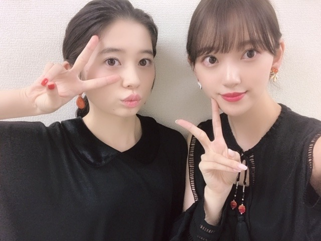

2019/0613Thu完成披露試写会 #ホットギミック #ホットギミックガールミーツボーイ
昨日は、ホットギミック ガールミーツボーイの完成披露試写会でした✨✨


黒いドレスに赤リップ。
シャドウはオレンジブラウン系を瞼と下瞼に囲むように塗ってます。
完成披露試写会では
山戸監督、吉岡さん、板垣くん、清水くん、間宮さん、ひよりちゃん、上村くんとステージに登壇させていただきました☺︎
すっごく緊張しました！！
顔の筋肉ブルブルした。
でもこうして一足先に観ていただけるのは凄く嬉しくて、改めて考えてもやっぱり嬉しくて
公開日6.28からはもっともっといろんな方に観ていただきたいなと強く思いました。
今までの青春恋愛映画とはまるで違って
年代問わず 性別問わず いろんな感想や見方をしていただける作品になっています。
きっと観ていて苦しくなったり、守りたくなったり、傷ついたり、共感したり感情が忙しくなると思います。
だからこそ、今、観てほしいです。。
男の人同士で観たり、女の人同士で観たりも
おすすめ(^-^)
そして主題歌を担当してくださる花譜さんの「夜が降り止む前に」のvideo short ver.のMVが完成しました
劇中の写真、映像が繋ぎ合わされていて観ていて、一瞬でホットギミックの世界に引き込まれると思います
そして花譜さんの素敵な繊細な歌声に鳥肌が立ちます。
泣きそうになりました。
ぜひ。
懐かしいなぁ...
堀未央奈として過ごした時間ではなく、
成田初として過ごした時間として記憶されています。
かけがえのない時間でした。

姉の、成田 茜役の桜田ひよりちゃん☺︎
いつも会う度、手繋いでくっついてます。
本当の妹みたいにかわいいです。

まだまだ舞台挨拶や上海国際映画祭を控えているので、体調管理に気をつけながら頑張ります✨
そして
arみたよ！の声、ありがとうございます(*･ω･)ノ
愛用化粧品、スキンケア類や、私服、などたくさん"わたしのこと"も紹介させていただいています
見てね〜♪
では
2019/06/13 12:48
コメント(229)
堀ちゃん！更新ありがとう！
最近は更新多くてとても嬉しいよ～！
昨日の映画完成披露試写会、
LINEライブで見させて頂きましたよ～！
側転！練習頑張っていつの日か
ハリウッドデビューできるのを
楽しみにしてます！！
本当に映画を期待してる人が
多いから、堀ちゃんなりに頑張って
もっと色んな人に映画を
見てもらえるように、まだまだ
頑張ってね！！
昨日のレコメンも
お疲れ様です！
こちらも聴かせて頂きました！
映画楽しみにしてる人
多かったね～！
のりさんも楽しみだろうし
自分も公開楽しみにしてます！
昨日は結構忙しかっただろうから
しっかりリフレッシュして
またお仕事、頑張ってね！！
応援してますよ～！
次回の更新も楽しみにしてます！
それでは！
体調1番で！！
おやすみおな～！！
最近は更新多くてとても嬉しいよ～！
昨日の映画完成披露試写会、
LINEライブで見させて頂きましたよ～！
側転！練習頑張っていつの日か
ハリウッドデビューできるのを
楽しみにしてます！！
本当に映画を期待してる人が
多いから、堀ちゃんなりに頑張って
もっと色んな人に映画を
見てもらえるように、まだまだ
頑張ってね！！
昨日のレコメンも
お疲れ様です！
こちらも聴かせて頂きました！
映画楽しみにしてる人
多かったね～！
のりさんも楽しみだろうし
自分も公開楽しみにしてます！
昨日は結構忙しかっただろうから
しっかりリフレッシュして
またお仕事、頑張ってね！！
応援してますよ～！
次回の更新も楽しみにしてます！
それでは！
体調1番で！！
おやすみおな～！！
みおな
これ映画大ヒットするやつやねっ！
これ映画大ヒットするやつやねっ！
試写会の応募の仕方わからんくて行ける可能性すらなかった。めっちゃ行きたかった！
お疲れ様！
わっさー！
お疲れ様！
わっさー！
舞台挨拶お疲れ様！衣装もメイクもいつもより大人っぽい！体調には気を付けてね( ⁎ᵕᴗᵕ⁎ )❤︎
楽しみ！！！
可愛いい・・・ レコメンでも大人の男性でも楽しめるって言ってくれたなーって思いました。
楽しみにしてますね。多忙ですね、どうか体調気をつけてね。堀ちゃん、いつもありがとう。
楽しみにしてますね。多忙ですね、どうか体調気をつけてね。堀ちゃん、いつもありがとう。
堀ちゃん、大好きだよー
更新ありがとう
ポットギミック楽しみにしてます
らじらー最高でした
また握手会行かせてもらおます
ポットギミック楽しみにしてます
らじらー最高でした
また握手会行かせてもらおます
更新有難う！
御疲れ様でした！
何時も頑張って下さい、
常に必ずしても応援しています。
どうか御身体に気を付けて下さい。
ずっと大好き！

御疲れ様でした！
何時も頑張って下さい、
常に必ずしても応援しています。
どうか御身体に気を付けて下さい。
ずっと大好き！
未央奈ちゃんありがとうございます！楽しみにしてます！頑張ります‼気をつけて下さい！ありがとうございます？気をつけて下さい。
見たい！
モレラ岐阜で舞台挨拶があるんだね。
カラフルタウンの方ではないのか（笑）
うれしいな、こんな地元ネタができるなんて。
地元に錦を飾るわけだから、くれぐれも体調を崩さないようにがんばってね。
カラフルタウンの方ではないのか（笑）
うれしいな、こんな地元ネタができるなんて。
地元に錦を飾るわけだから、くれぐれも体調を崩さないようにがんばってね。
堀未央奈❤こんばんは 映画では観れないけどDVD 発売されたら買うね 早く出て欲しいな もう一人の人姉妹役で出てるの？まだ続くんだね 頑張ってね 未央奈可愛い(*^_^*)愛してるよ(#^.^#)
未央奈ブログ更新ありがとう！
舞台挨拶の配信見たよ。
黒のドレスが似合ってて美しかった。
緊張してるの伝わってきたよ。
映画の舞台挨拶の場に未央奈がいるという光景に、改めて本当に主演女優なんだなあ、こうして女優堀未央奈が知られていくんだなあと思ったよ。
改めておめでとうと言いたくなった。
夜が降り止む前にのMVもすごく心を揺さぶられた。
映画本編が早く観たいなあ。
ar読んだよ！未央奈のことを知れるの嬉しい。
では！
舞台挨拶の配信見たよ。
黒のドレスが似合ってて美しかった。
緊張してるの伝わってきたよ。
映画の舞台挨拶の場に未央奈がいるという光景に、改めて本当に主演女優なんだなあ、こうして女優堀未央奈が知られていくんだなあと思ったよ。
改めておめでとうと言いたくなった。
夜が降り止む前にのMVもすごく心を揺さぶられた。
映画本編が早く観たいなあ。
ar読んだよ！未央奈のことを知れるの嬉しい。
では！
未央奈さんこんばんは！昨日は試写会にレコメンにお疲れさまでした。ホットギミック楽しみにしています。まだ試写会あるみたいなので体調気をつけて下さい 陰ながら応援しています。
陰ながら応援しています。
いつもと違う雰囲気なファッション
黒いドレス初めて見た驚き、
いままで乃木坂でしか見たことないから、
女優の堀未央奈見よう。
ホットギミック
黒いドレス初めて見た驚き、
いままで乃木坂でしか見たことないから、
女優の堀未央奈見よう。
ホットギミック
おめでとうございます。
プルプル･･･
他意はないよ～～(笑)
･･･感情が忙しくなるの！！
えっと？
耐性をつけ･･･（3行目）
舞台挨拶！！
そうですよね！
ありますよね！
コメントは大丈夫そうですが･･･(笑)
大葉集めとかかな？(笑)
プルプル･･･
他意はないよ～～(笑)
･･･感情が忙しくなるの！！
えっと？
耐性をつけ･･･（3行目）
舞台挨拶！！
そうですよね！
ありますよね！
コメントは大丈夫そうですが･･･(笑)
大葉集めとかかな？(笑)
堀ちゃん、こんばんわ。
完成披露試写会、おつかれさま＼(・ω・)／
黒い衣装、すごくおしゃれだね
まだまだ先だなぁ、って思っていた『ホットギミック』も目前に迫ってきたね。
そういえば、乃木坂のドキュメンタリー映画第2弾も公開されるとか
今年の夏の映画は、いっぱい楽しめそうだっ！
完成披露試写会、おつかれさま＼(・ω・)／
黒い衣装、すごくおしゃれだね
まだまだ先だなぁ、って思っていた『ホットギミック』も目前に迫ってきたね。
そういえば、乃木坂のドキュメンタリー映画第2弾も公開されるとか
今年の夏の映画は、いっぱい楽しめそうだっ！
ブログ書いてくれてありがとう
ホットギミック試写会行ったよ～
ピンクのハートと青い文字で未央奈って書いてある黄色いボード持ってたよ！
気づいてくれてありがとう
すごく綺麗な映像でまばたきが勿体なくて、でも初をみていて胸が苦しくなったし、自分もそう思うと感じるシーンがたくさんありました。それはわたしが初と同い年だからかもしれないです。わたしは恋をしていて迷ったり苦しいと思うこともあって悩んでいます。未央奈の「全然わかんないよ」っていうセリフで胸が締めつけられました。ラストシーンも涙が溢れちゃいました。初の役は未央奈にぴったりだと思ったし、未央奈だからこそキラキラしていたんだと思います。ホットギミックが大好きな映画のひとつになりました！
わたしは未央奈に宇宙感じてます
ホットギミック試写会行ったよ～
ピンクのハートと青い文字で未央奈って書いてある黄色いボード持ってたよ！
気づいてくれてありがとう
すごく綺麗な映像でまばたきが勿体なくて、でも初をみていて胸が苦しくなったし、自分もそう思うと感じるシーンがたくさんありました。それはわたしが初と同い年だからかもしれないです。わたしは恋をしていて迷ったり苦しいと思うこともあって悩んでいます。未央奈の「全然わかんないよ」っていうセリフで胸が締めつけられました。ラストシーンも涙が溢れちゃいました。初の役は未央奈にぴったりだと思ったし、未央奈だからこそキラキラしていたんだと思います。ホットギミックが大好きな映画のひとつになりました！
わたしは未央奈に宇宙感じてます
明日のshowroom頑張ってね
楽しみにしてます！
楽しみにしてます！
未央奈～ こんにちは
連日のブログ更新ありがとうございます。
「ホットギミック」の映画完成試写会、おめでとうございます。緊張の中にも主演としての自覚と責任がにじみ出ていたようで、プルプル顔面はその表れですよね。
ホント、月末の公開が待ち遠しい限りです。
ところで、舞台挨拶の方も予定されているそうで、未央奈の地元・岐阜での上映会を申し込みましたが、どうか当たりますように‥‥。
雑誌の方も連日のご活躍、何よりです。
乗りに乗っている未央奈、まさに「輝いて」いますね。
もちろん、レコメンも聞きましたよ。おつかれさまでした。
今日は久しぶりいいお天気でしたが、また明日から雨のようです。大切な時だけに、くれぐれも体調崩さないように気をつけてくださいね。
連日のブログ更新ありがとうございます。
「ホットギミック」の映画完成試写会、おめでとうございます。緊張の中にも主演としての自覚と責任がにじみ出ていたようで、プルプル顔面はその表れですよね。
ホント、月末の公開が待ち遠しい限りです。
ところで、舞台挨拶の方も予定されているそうで、未央奈の地元・岐阜での上映会を申し込みましたが、どうか当たりますように‥‥。
雑誌の方も連日のご活躍、何よりです。
乗りに乗っている未央奈、まさに「輝いて」いますね。
もちろん、レコメンも聞きましたよ。おつかれさまでした。
今日は久しぶりいいお天気でしたが、また明日から雨のようです。大切な時だけに、くれぐれも体調崩さないように気をつけてくださいね。
完成披露試写会お疲れ！
初の、試写会に参加したじゃん、女優としての第
一歩になって、まだ上海もあるから、大変だけど
これが広まっていけば、いつまでも永遠の宝物に
なっていくはずだよ！
初の、試写会に参加したじゃん、女優としての第
一歩になって、まだ上海もあるから、大変だけど
これが広まっていけば、いつまでも永遠の宝物に
なっていくはずだよ！
堀ちゃん、こんばんは！
韓国からのシロ君です！
今日もかわいいですね～
ずっと応援します！大好き！！！
韓国からのシロ君です！
今日もかわいいですね～
ずっと応援します！大好き！！！
ブログ更新ありがとう！
ホットギミック、友達誘ってみにいくね！
ひよりちゃんとの2ショット可愛い(^O^)
未央奈表紙のar楽しみにしてた！
明日本屋さんに買いにいくよ〜〜
未央奈のこといっぱい載ってるって聞いたら余計楽しみ◎
ホットギミック、友達誘ってみにいくね！
ひよりちゃんとの2ショット可愛い(^O^)
未央奈表紙のar楽しみにしてた！
明日本屋さんに買いにいくよ〜〜
未央奈のこといっぱい載ってるって聞いたら余計楽しみ◎
こんにちは‼︎
ブログ更新、ありがとうございます♪
黒のドレスに赤リップ。
めっちゃ大人っぽい…‼︎
いつの間にか、こんなに大人の魅力を身につけて。
嬉しい気持ちと、ちょっと寂しい気持ちと(笑)。
なんか、時の流れを感じますね…‼︎
よく考えると、未央奈を応援するようになってから、それなりに時間が経ってるもんなあ。
未央奈は気づいていないかもしれないけど、ひそかに積み重なった歴史があるなあって♪
未央奈のブログにコメントするのも、何回目なんだろう。
数えたこともないから、分からないですね♪
自分は変なところで恥ずかしがるところがあって(苦笑)、未央奈に会いに行っても特段何かアピールすることもしません。
だから、未央奈は自分の名前も知らないし、会ってる自分とブログのコメントがリンクしないと思います。
でも勝手に、深いところで繋がっているんだと信じているんですよね(笑)。
いやいや、分かってますよ、勘違いだって。
分かってて、楽しんでいるんです♪
う〜ん、ちょっと酔っ払っているのかなあ。
ロクなコメントができない(笑)。
そうそう、花譜さんの主題歌‼︎
予告編が公開された頃から、評判でしたよね♪
痛くなるぐらい胸を締めつける、切ない歌声に心が震える思いです…‼︎
『ホットギミック』の公開、今から楽しみです♪
ではでは、また。
明日も未央奈にとっていい1日になりますように♪
ブログ更新、ありがとうございます♪
黒のドレスに赤リップ。
めっちゃ大人っぽい…‼︎
いつの間にか、こんなに大人の魅力を身につけて。
嬉しい気持ちと、ちょっと寂しい気持ちと(笑)。
なんか、時の流れを感じますね…‼︎
よく考えると、未央奈を応援するようになってから、それなりに時間が経ってるもんなあ。
未央奈は気づいていないかもしれないけど、ひそかに積み重なった歴史があるなあって♪
未央奈のブログにコメントするのも、何回目なんだろう。
数えたこともないから、分からないですね♪
自分は変なところで恥ずかしがるところがあって(苦笑)、未央奈に会いに行っても特段何かアピールすることもしません。
だから、未央奈は自分の名前も知らないし、会ってる自分とブログのコメントがリンクしないと思います。
でも勝手に、深いところで繋がっているんだと信じているんですよね(笑)。
いやいや、分かってますよ、勘違いだって。
分かってて、楽しんでいるんです♪
う〜ん、ちょっと酔っ払っているのかなあ。
ロクなコメントができない(笑)。
そうそう、花譜さんの主題歌‼︎
予告編が公開された頃から、評判でしたよね♪
痛くなるぐらい胸を締めつける、切ない歌声に心が震える思いです…‼︎
『ホットギミック』の公開、今から楽しみです♪
ではでは、また。
明日も未央奈にとっていい1日になりますように♪
堀さんブログありがとうございます。
可愛い堀さんを見るといつも癒されます。
明日も頑張ってください！
可愛い堀さんを見るといつも癒されます。
明日も頑張ってください！
未央奈お疲れ様！
ブログ更新ありがとう！
完成披露試写会おつかれ！
おれも早く見たいよ～！
黒いドレスめっちゃ似合ってる！
ほんとにめっちゃいい映画って伝わってくる！
まだまだ行事があると思うから体調はほんとに
気を付けてね！
寝る前にうがいしてねるといいよ！笑笑
これからも応援してる！
がんばれー！
ブログ更新ありがとう！
完成披露試写会おつかれ！
おれも早く見たいよ～！
黒いドレスめっちゃ似合ってる！
ほんとにめっちゃいい映画って伝わってくる！
まだまだ行事があると思うから体調はほんとに
気を付けてね！
寝る前にうがいしてねるといいよ！笑笑
これからも応援してる！
がんばれー！
昨日の見たよ〜！
昨日の未央奈ちゃん超可愛かった！
ホットギミック絶対見に行く！
昨日の未央奈ちゃん超可愛かった！
ホットギミック絶対見に行く！
楽しみ！
これは観たい！
これは観たい！
みおたん、こんばんは(^_^)
試写会お疲れ様でした。
LINE LIVEで見てたよ(^_^)
明日の「のぎおび」頑張ってね！
まさかカップ麺にそんな物を入れて食べさせられるなんて(；ﾟДﾟ)
因みに、僕なら絶対にやりません！
それじゃ、またね(^o^)／
試写会お疲れ様でした。
LINE LIVEで見てたよ(^_^)
明日の「のぎおび」頑張ってね！
まさかカップ麺にそんな物を入れて食べさせられるなんて(；ﾟДﾟ)
因みに、僕なら絶対にやりません！
それじゃ、またね(^o^)／
ブログ更新ありがとう！！
映画楽しみにしてます！！
映画楽しみにしてます！！
堀ちゃんこんばんは
ブログ更新お疲れ様です
黒いドレス、凄くよく似合ってる
映画、すぐは無理だが見に行きます
体調崩さないようにぬ！
では
ブログ更新お疲れ様です
黒いドレス、凄くよく似合ってる
映画、すぐは無理だが見に行きます
体調崩さないようにぬ！
では
堀ちゃんお疲れ様です！
ホットギミックの公開日が待ちきれない今日この頃です…
早く公開してくれないかなぁー
とても楽しみにしてるし堀ちゃんの女優としてのスタートがどーなっているのかなと期待してます！
気温の変化が激しいですが頑張ってください！！
ホットギミックの公開日が待ちきれない今日この頃です…
早く公開してくれないかなぁー
とても楽しみにしてるし堀ちゃんの女優としてのスタートがどーなっているのかなと期待してます！
気温の変化が激しいですが頑張ってください！！
コメント遅くなっちゃった〜
昨日新宿で行われたホットギミック ガールミーツボーイの完成披露試写会参加させていただきました！堀推し7人で行って前から2列目と3列目で見させてもらいました！堀さんから見て左の出入り口目の前のとこ！堀推しの方の中では1番前だったかな〜arとか友達が持ってたうちわとか気づいてくれてありがと！笑ってくれたの嬉しかったw安心したと言ってくれてよかった！映画の内容も素敵でした〜映像の使い方とか挿入歌も素敵で、アイドル堀未央奈ではなく女優堀未央奈を見ました。あと3回は見に行きたい。。また詳しい感想とかは握手会で伝えます！
arも見たよ〜とても綺麗で、輝いていました！保存用も買わなくちゃ！笑また次表紙飾る日がもう楽しみ！
これからも応援してるよ！^ ^
昨日新宿で行われたホットギミック ガールミーツボーイの完成披露試写会参加させていただきました！堀推し7人で行って前から2列目と3列目で見させてもらいました！堀さんから見て左の出入り口目の前のとこ！堀推しの方の中では1番前だったかな〜arとか友達が持ってたうちわとか気づいてくれてありがと！笑ってくれたの嬉しかったw安心したと言ってくれてよかった！映画の内容も素敵でした〜映像の使い方とか挿入歌も素敵で、アイドル堀未央奈ではなく女優堀未央奈を見ました。あと3回は見に行きたい。。また詳しい感想とかは握手会で伝えます！
arも見たよ〜とても綺麗で、輝いていました！保存用も買わなくちゃ！笑また次表紙飾る日がもう楽しみ！
これからも応援してるよ！^ ^
試写会お疲れ様でした！
主役としての重責、背負うものも大きいと思いますが、キャストの方、スタッフの方、関わられたたくさんの方で「ホットギミック」という作品をかついでいるかと思います。気持ちを楽に、楽しむ気持ちをもって、上映までの期間また頑張って下さい。
ブログで言われている様に体調管理が一番ですね。
油断せずに万全の体調で、この期間は過ごせれる事を願っています。
それではまた！
主役としての重責、背負うものも大きいと思いますが、キャストの方、スタッフの方、関わられたたくさんの方で「ホットギミック」という作品をかついでいるかと思います。気持ちを楽に、楽しむ気持ちをもって、上映までの期間また頑張って下さい。
ブログで言われている様に体調管理が一番ですね。
油断せずに万全の体調で、この期間は過ごせれる事を願っています。
それではまた！
未央奈～こんばんは！
ぽてとです！
試写会お疲れ様。
早く劇場で見たいなー！！
たのしみ♪
ぽてとです！
試写会お疲れ様。
早く劇場で見たいなー！！
たのしみ♪
ホットギミック見たいです！！
28日が待ちきれないです！
28日が待ちきれないです！
乃木坂46堀未央奈 夢はアクション女優で側転の練習してます!?
（「めざましテレビ」6月13日放送分より）
↑↑ 頑張ってね！！ (^_-)-☆
ps：徳島は まだ rainy season に入って無いですが、
東京で 風邪引かないでね！！ (^_^)v
（「めざましテレビ」6月13日放送分より）
↑↑ 頑張ってね！！ (^_-)-☆
ps：徳島は まだ rainy season に入って無いですが、
東京で 風邪引かないでね！！ (^_^)v
こんばんみーお♪
ブログありがとう！
今、仕事帰り〜
いや〜バルト9での完成披露試写会、
感動したよ！
なんか、女優 堀未央奈の歴史の一頁に立ち会う事が出来、
本当に感無量だったよ。。。
ほんと、頑張ったんだね。。。
よかった、素晴らしい！
圧倒されたよ。
初ちゃんの成長物語でもあり
女優堀未央奈の成長記でもあるね。
そして、間違いなく今後の芸能生活の中でも
金字塔となる作品になったね！
天晴れ♪
一夜明けて、もう早くも
もう一度観たいと思っているよ
抉られたなぁ〜
殴られた『痛み』や『衝撃』でもなく。
『閉塞感』でもなく。
やっぱ、抉られた感じかなぁ〜
これ、思春期に観たら、人によっては、
激痛を伴う映画かもよ。
みおの初出演作なので、
今までのいろいろな事を思い出して
感傷的になるかなぁ〜
なんて思っていたら、
まったく、そんな余裕を与えて貰えない作品だった！笑
くぅ〜
抉られた。。。
あと、独特なリズム感の作品だったなぁ〜
いろいろと視点を違えて何回も観てみたい。
とりあえず、博多、大阪に行く！
その間に原作を読みたいの進めたい。
先ずは、原作を読まずに観たかった。
原作を読んだ後での見え方の変化も楽しみたい！
初ちゃんの歯痒さが思春期なんやろなぁ〜
バカって、ピュアで傷つきやすいけど
正しいのかも。。。
うん、バカにならなきゃ！
とも、思った。笑
あ〜、ロスだよ。ロス！！
早く、2回目を観たい。
まだ、見えていない部分が沢山あると思う。
楽しみ過ぎる♪
とにかく、
あらためて
初出演
おめでとう！
そして、
ありがとう。
いろいろな想いを抱えて
また映画館に行くよ。
わたる⊿
ブログありがとう！
今、仕事帰り〜
いや〜バルト9での完成披露試写会、
感動したよ！
なんか、女優 堀未央奈の歴史の一頁に立ち会う事が出来、
本当に感無量だったよ。。。
ほんと、頑張ったんだね。。。
よかった、素晴らしい！
圧倒されたよ。
初ちゃんの成長物語でもあり
女優堀未央奈の成長記でもあるね。
そして、間違いなく今後の芸能生活の中でも
金字塔となる作品になったね！
天晴れ♪
一夜明けて、もう早くも
もう一度観たいと思っているよ
抉られたなぁ〜
殴られた『痛み』や『衝撃』でもなく。
『閉塞感』でもなく。
やっぱ、抉られた感じかなぁ〜
これ、思春期に観たら、人によっては、
激痛を伴う映画かもよ。
みおの初出演作なので、
今までのいろいろな事を思い出して
感傷的になるかなぁ〜
なんて思っていたら、
まったく、そんな余裕を与えて貰えない作品だった！笑
くぅ〜
抉られた。。。
あと、独特なリズム感の作品だったなぁ〜
いろいろと視点を違えて何回も観てみたい。
とりあえず、博多、大阪に行く！
その間に原作を読みたいの進めたい。
先ずは、原作を読まずに観たかった。
原作を読んだ後での見え方の変化も楽しみたい！
初ちゃんの歯痒さが思春期なんやろなぁ〜
バカって、ピュアで傷つきやすいけど
正しいのかも。。。
うん、バカにならなきゃ！
とも、思った。笑
あ〜、ロスだよ。ロス！！
早く、2回目を観たい。
まだ、見えていない部分が沢山あると思う。
楽しみ過ぎる♪
とにかく、
あらためて
初出演
おめでとう！
そして、
ありがとう。
いろいろな想いを抱えて
また映画館に行くよ。
わたる⊿
未央奈ちゃん、こんばんは！
ってか、物凄く遅い時間ですが…
ホットギミックの公開日が待ちきれないです
早く公開してくれなかなと思ってます
女優堀未央奈のとスタートがどーなっているのかなと期待してしまいます✨
気温の変化が激しいですが身体に気を付けて頑張ってください！！
ってか、物凄く遅い時間ですが…
ホットギミックの公開日が待ちきれないです
早く公開してくれなかなと思ってます
女優堀未央奈のとスタートがどーなっているのかなと期待してしまいます✨
気温の変化が激しいですが身体に気を付けて頑張ってください！！
未央奈ちゃん、こんばんは(^o^)/
桜田ひよりちゃんは姉じゃなくて妹役ですよね？
質問
また今度映画やドラマに出演するとしたら、どんな役をやってみたいですか？
桜田ひよりちゃんは姉じゃなくて妹役ですよね？
質問
また今度映画やドラマに出演するとしたら、どんな役をやってみたいですか？
リンクから視聴しました
未央奈と同じ
鳥肌が立ちました
今日だけで20回は観たかな(笑)
観る度に鳥肌が立ちました
映画本編がわずか1分40秒に上手く凝縮されてるように感じました
特に歌終わりのピアノ
ピアノを弾(ひ)くからピアノを弾(はじ)く
最後はピアノを叩く
登場人物の高ぶってゆく感情の変化を表すかのように感じました
上手く言えないけど合ってるかな❓(笑)
で、一つ気になることがあります
両親役の高橋和也さん黒沢あすかさんについて
お二方共、映画やドラマで欠かせない名バイプレイヤーの印象があります
未央奈なりのコメントが聞きたいです
未央奈と同じ
鳥肌が立ちました
今日だけで20回は観たかな(笑)
観る度に鳥肌が立ちました
映画本編がわずか1分40秒に上手く凝縮されてるように感じました
特に歌終わりのピアノ
ピアノを弾(ひ)くからピアノを弾(はじ)く
最後はピアノを叩く
登場人物の高ぶってゆく感情の変化を表すかのように感じました
上手く言えないけど合ってるかな❓(笑)
で、一つ気になることがあります
両親役の高橋和也さん黒沢あすかさんについて
お二方共、映画やドラマで欠かせない名バイプレイヤーの印象があります
未央奈なりのコメントが聞きたいです
流石は未央奈ちゃん、
気合の入った仕上がりで舞台挨拶にも抜かりなし(^^)
なんだかんだであと2週間くらいあるのね（笑）
乃木坂ファンは女の子も多いから男ばっかりにならなさそうだよね
気合の入った仕上がりで舞台挨拶にも抜かりなし(^^)
なんだかんだであと2週間くらいあるのね（笑）
乃木坂ファンは女の子も多いから男ばっかりにならなさそうだよね
あと、茜ちゃんって妹役だよね〜
姉の成田茜役の〜
って、なっているよ〜
姉の成田茜役の〜
って、なっているよ〜
未央奈、映画公開したら見ます！
明日、のぎおびの配信も見るから映画のことネタバレしない範囲でいいので話してほしいです！
明日、のぎおびの配信も見るから映画のことネタバレしない範囲でいいので話してほしいです！
鹿です⊂(ο･㉨･ο）⊃”くまﾃﾞｽ…
ぼぶったん堀殿きゃわわうれぴーぽーo(￣◎￣)o ﾊﾞﾌﾞｩ♡
ほんじつもかつ丼パワー100万馬力でばいころまる( ;-(ｴ)-)ゞｸﾏｯﾀﾅｧ…
ぼぶったん堀殿きゃわわうれぴーぽーo(￣◎￣)o ﾊﾞﾌﾞｩ♡
ほんじつもかつ丼パワー100万馬力でばいころまる( ;-(ｴ)-)ゞｸﾏｯﾀﾅｧ…
未央奈さんこんばんは。
ホットギミック試写会見させていただいたよ。
黒いドレスめちゃんこかわいい!ほんと綺麗でかわいくて、また惚れてしまいました。
これ以上綺麗になってどうするんですか?
今日はのぎおびに未央奈さん登場ですよね、超超超楽しみです。
和ラーに生クリーム?食べるんですよね、いくちゃんすごいの引いてくれたね。きっと美味しいと思うよ。
絶対見るからね、楽しみだー!
ホットギミック試写会見させていただいたよ。
黒いドレスめちゃんこかわいい!ほんと綺麗でかわいくて、また惚れてしまいました。
これ以上綺麗になってどうするんですか?
今日はのぎおびに未央奈さん登場ですよね、超超超楽しみです。
和ラーに生クリーム?食べるんですよね、いくちゃんすごいの引いてくれたね。きっと美味しいと思うよ。
絶対見るからね、楽しみだー!
未央奈～☆☆
このドレスめっちゃお洒落で、
完成披露試写会にピッタリだね！
未央奈に凄く似合ってるよー
「夜が降り止む前に」のMVを観たよ。
この主題歌を映画の予告編で聴いたときに
あの短い時間の中でも感動したことを思い出したけど、
今回のMVでは、写真と映像の繋ぎ合わせと
この歌がもの凄く合っていて、
歌にのって流れていく映画のシーンも凄く感動的で、
ジーンとしながら見入っちゃったよ。
成田初の生きた世界を早く観たいな～
このドレスめっちゃお洒落で、
完成披露試写会にピッタリだね！
未央奈に凄く似合ってるよー
「夜が降り止む前に」のMVを観たよ。
この主題歌を映画の予告編で聴いたときに
あの短い時間の中でも感動したことを思い出したけど、
今回のMVでは、写真と映像の繋ぎ合わせと
この歌がもの凄く合っていて、
歌にのって流れていく映画のシーンも凄く感動的で、
ジーンとしながら見入っちゃったよ。
成田初の生きた世界を早く観たいな～
因みに、今までの青春恋愛映画を教えて欲しい！？具体的に何がまるで違うのか教えて下さい・・・！！！でもシリーズ映画みたいに多感な
感想になりそうですね・・・。
あの世紀の大傑作エンドゲーム続編で親愛なる隣人ことスパイダーマン！ファーフロムホーム！も
同じ日に世界最速公開しますから楽しみですね・・・！？
では明日もお互いに頑張りましょう・・・。
感想になりそうですね・・・。
あの世紀の大傑作エンドゲーム続編で親愛なる隣人ことスパイダーマン！ファーフロムホーム！も
同じ日に世界最速公開しますから楽しみですね・・・！？
では明日もお互いに頑張りましょう・・・。


側転って言葉が記憶に残ってます。笑
映画は絶対に見ます。映画で思い出したけど、乃木坂のドキュメンタリーも公開されるね。。